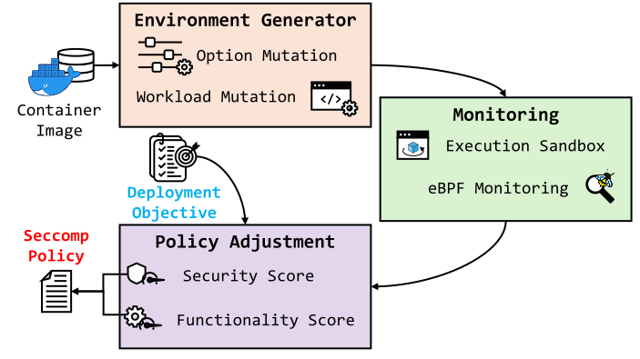

Environment Diversity
The same container can exercise different system calls under different runtime options and workloads.
BeaCon profiles containers across representative workloads and runtime configurations, collecting dynamic execution evidence using eBPF. It leverages this evidence to generate tunable least-privilege policies, allowing operators to balance attack surface reduction against deployment functionality.
01 / CHALLENGE
The same container can exercise different system calls under different runtime options and workloads.
A single execution trace may miss required behavior, while aggregating every observation can preserve unnecessary privileges.
A fixed policy can either restrict intended functionality or expose a broader syscall surface than necessary.
02 / DESIGN RATIONALE
Vary container runtime options and workloads to explore execution beyond the default launch configuration.
Capture system events with eBPF and associate each observation with the environment that triggered it.
Evaluate candidate allowlists against security risk and representative-environment functionality rather than selecting one fixed profile.
03 / SYSTEM ENGINEERING

Maintains structured Docker-option and workload data, mutates valid runtime settings, and executes containers across representative environment combinations. YCSB provides repeatable database and web-server workloads.
Approach 01 · ExploreUses BCC/eBPF instrumentation to observe system-call invocations and capability requests during container execution. Events are stored with their corresponding environment context.
Approach 02 · ObserveEvaluates candidate policies using a security score informed by known kernel CVEs and a functionality score based on the fraction of representative environments supported by the policy. It produces tunable policy choices along a security–functionality frontier.
Approach 03 · BalanceBeaCon separates profiling from policy application: environment execution and evidence collection can be performed offline, while the stored evidence supports policy decisions during deployment.
04 / OUTCOMES
The 80% comparison uses the 54-image subset compatible with all evaluated tools. The vulnerability result is specific to CVE-2012-3375 and should not be interpreted as an overall vulnerability mitigation rate.